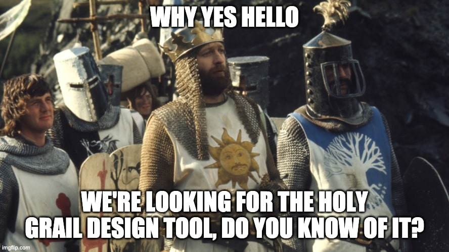
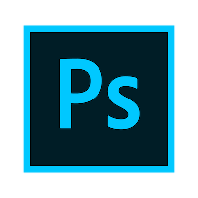
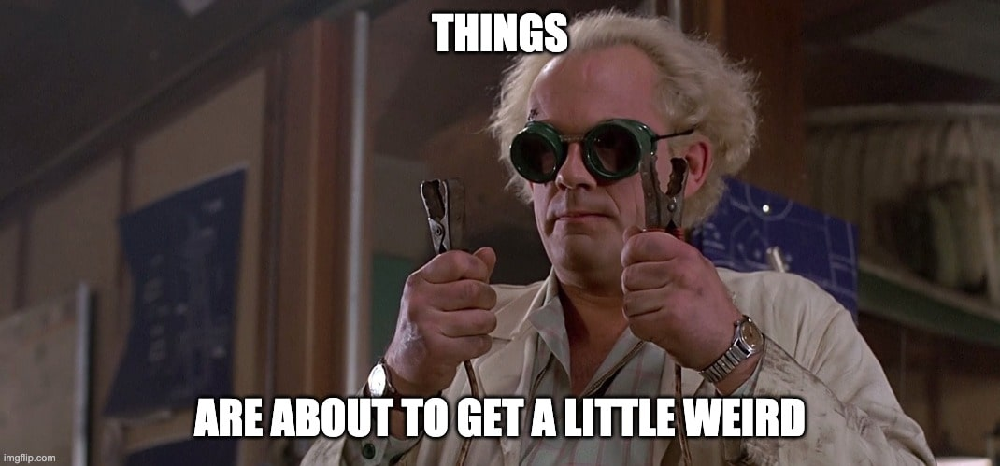
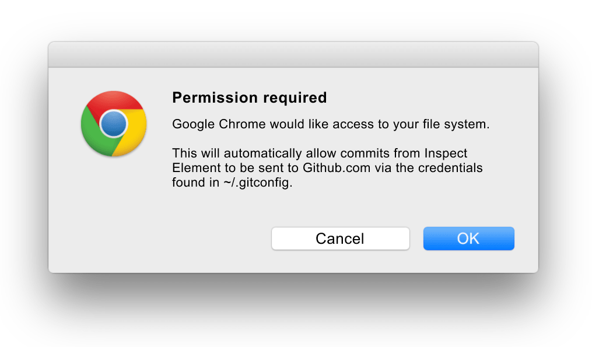

The future of design tools and why developers should care
17 Mar 2020
This will be jolly good.
Here it is. The exposé. Buckle up, grab a packet of chips and open that can of Coke. This is what we'll do:
- Outline the current design tool landscape
- Talk about the f u t u r e
- Talk about why developers need to care about this
Ready? Let's do it!
p.s. just before we start, this is for user interface tools and visual design tools. Things that can output a "final" design. So Balsamiq and other UX wireframing tools aren't included.
The present
There are a lot of design tools right now. And that's because we don't know what a design tool should BE. We have some ideas. But really we are still trying to figure it out. So to start, let's create some buckets:
Traditional tools:
Photoshop Sketch Figma Adobe XD
The way you know we still haven't figured out design tools is by the fact that Photoshop still ranks highly in design tool surveys. It was released in 1990 and its main selling point was the ability to edit raster graphics!
It might not seem fair to consider the new tools as traditional tools. Their multiplayer magic where many people can work in the same file makes them feel like a new wave. But they aren't. They are all based on the same paradigm. You have layers. You manipulate them. You export artboards or images to static image formats or you share the canvas with a colleague.
Another paradigm these tools conform to is that when are designing, it all happens on a canvas. And that canvas isn't based on HTML. It's great, you can manipulate objects in a very natural way. You can draw anything you want, add shapes and even bitmaps. But where it stops short is integrating neatly with the web. For example:

If you create a rectangle and give it a fill colour, this is the CSS you are given by Figma. This is really great for developers. They can pop-in and see what various CSS properties an object has. But that's where it stops. You have to rely on naming artboards and files correctly to ensure developers don't use the wrong version. There's also no connection in the relationship of this orange rectangle to the objects around it.
I want to be clear, I'm not bashing Figma. It's actually my favourite design tool right now. They go through great lengths to guide developers and designers though this murky process. Their guides are exceptional. But really, the limiting factor here is that word. CANVAS. They have one. And it's built using a 2D WebGL rendering engine. It is not built on top of HTML. And for good reason! There are various rendering issues and web browsers aren't at the same level as native platforms (yet).
I'm an optimist though. Depending on how things play out, Figma could be the future. And I'd be OK with that. A recent feature they pushed out, Auto Layout, brings rules from CSS into the Figma experience. This makes me very happy.
That's a lot of talk about Figma specifically. What about Sketch and all the others? Well, Figma is kinda winning. Sketch is still king, but Figma is growing. This chart really helps put it in context:

And Figma is a great segue into the next category of tools!
No-code tools:
Webflow is the cool kid on the block. It's young, new and holds great promise. The tagline on their website is "Build better business websites, faster. Without coding." so clearly they are going for the no-code designers. And not just designers. They have the potential to become the Dreamweaver of the 21st century. And I mean that in the best way possible.
How many designers started out by opening up Dreamweaver in high school and hacking together a functional website? More than a few. Webflow channels that vibe. You can build a website and feel like a pro with all of the buttons in that sweet GUI. Feeling like a pro while being a newbie is so powerful. Webflow could capture the next generation of designers.
The fact you can hit "publish" and instantly send someone a hyperlink to a live website is… amazing. The hyperlink is the foundation of the web. All you need to do is click it. And if that power can be leveraged by designers more effectively it would be great. It beats a static .png file every time.
The approach they are taking is solid and it'll just come down to execution. Really. That's all I have to say about no-code. It's mostly Webflow and if they do it right and focus a little more on performance I can see them becoming a new standard.
Hybrid tools:
These are the even cooler kids on the block. And I'm not yet 100% sure what to make of them. I love the idea behind them so much, I want them to become the new normal. But I'm not sure how many designers are ready for them.
How are these tools different to Webflow? They don't shy away from code. In fact, they encourage developers and designers to work together. They argue that designers and developers should work on the UI, together. A designer might want a colour palette and a developer might want an input box. And that's fine, the GUI should support both workflows. The main point is that they should be doing it together.
Modulz: "Our mission is to fix the disconnect between digital product teams."
and;
"To get everyone collaborating on their products. Together."
Hadron: "Hadron is a development environment for designers and developers who work together towards the same goal, moving ideas forward and learning from each other along the way."
Pretty strong, clear statements. Personally, I like this. I know many people won't like it. Separation of concerns is a real thing. Many developers believe in it, almost blindly, like a credo whose meaning is lost to the mist of time. OK I got a bit poetic there. But really, it's a thing. HTML/CSS/JS should be separate. Or should they? Even that long standing tower is being attacked on all sides. So why should design and developer tools be separate?
Pure code tools:
This is an interesting bucket because it doesn't pertain to the majority of designers. Many designers are not comfortable designing in the browser. They aren't comfortable using a code editor at all. And this should be OK. Anyway, these tools are ones that many developers are familiar with. Bootstrap, Tachyons (and the other 87364873 frameworks out there). Even APIs like Animate.css are a form of design tool.
Side-note
There are other Experimental tools which developers have been playing around with. Things like René or Cicerone, things I've come across over the years which have their own twist on things. And there are so many apps that are dead and gone. R.I.P Macaw, I barely knew thee.
Time for The F U T U R E
We've hashed out a basic summary of the current landscape, now let's think of where we'll be in 5, 10 or 20 years from now.
Future #1: The IDE takes over
Do I mean the integrated development environment? Or the integrated DESIGN environment? I don't know! Tons of developers live inside Visual Studio. What if there was a design equivalent?
I think this future is the most likely. After enough developers get a taste of accessing a Figma URL and grabbing some code, they'll wish they could access more. And an app like Hadron would give that to them. While it might be Modulz or Hadron that creates the first version of this future, they'll probably be bought out by Google or Facebook and that product or type of experience will become the new standard.
That being said, this future looks bright. It would be incredible to have a single tool that designers create in and developers write code in. I'm sure most designers, even the ones who don't code, would like this. The "handoff" wouldn't exist as everyone would be on the same page, literally.
Future #2: Micro-apps
Maybe I'm biased as I'm building a micro app myself but hey this could happen! This is more of a pipe dream. I would love for Electron.js to lead the proliferation of a million useful design tools. And for these tools to be created by independent designers and developers, leading to a strong and robust design ecosystem.
It's like the cafè culture in Melbourne. Lots and lots of small delicious cafès, serving up the best coffee in the world. As opposed to Starbucks owning the entire coffee marketplace and calling all the shots (ha get it).
This doesn't seem likely. Humans love standards and standardising things so I think whatever the future is, it'll always gravitate towards 1 or 2 main tools.
Future #3: Browsers gobble it up
This is a crazy idea but hear me out. Inspect Element is amazing. It's what Hadron is basically utilising in its app. The experience that Chrome and Firefox have created around things like animations and grids is impressive. So why can't Chrome and Firefox add a few extra features, let developers enter "Edit" mode and allows those edits to change the files you are manipulating?
Edge is now on Chromium so I don't see why this couldn't be a possibility. Imagine: You have your web app open. If you click "Edit" mode you authenticate with your local dev environment and boom, the Inspect Element tool is now accessing your local file system. Make a change in the DOM directly through Inspect Element, commit and push the changes and you're done. Do you like the sound of that?
This could be a thing. How many of you have an AdBlocker extension running right now? And if so, did it ask for persmission to read all data on websites you visit? And that's to remove ads. Imagine the productivity boost you'd gain if Chrome or Firefox had this Inspect Element/local file system feature.
Future #4: AI takes over
Why use a computer at all? Sketch something on a piece of paper, take a photo and AI recognises all the components right away. Not as far away as you think. Airbnb have already blogged about it with a very real demo.
But demos are demos. Personally I think this is a 50 year problem. I dunno, after you have the computer automatically turning your hand drawn sketches into React components, you still need the human element to choose the "theme" at the very least. And even then, there's always the custom part of your UI that needs to be created.
If all apps were able to be fully componentised, UI designers would already be out of a job. When AI solves this, it'll also have solved self-driving cars.
Why is this important for developers?
As designers we… need you! How many of these tools have you never heard of before? How many of them did you wish you could use? How many of them do you wish your designer was using? How many ideas do you have for improving designer/developer collaboration?
These are all important questions that require (at least a little bit) of your attention. Electron.js is making it super easy for people to "create apps". With your software engineering kills, you can literally whip up a new design tool within a matter of weeks, or days! With some careful planning and outsourcing I was able to build Motion in a few months. And I'm no software engineer. But you are! :) The vision for new design tools might be driven by designers, but ultimately, they will be built by developers.